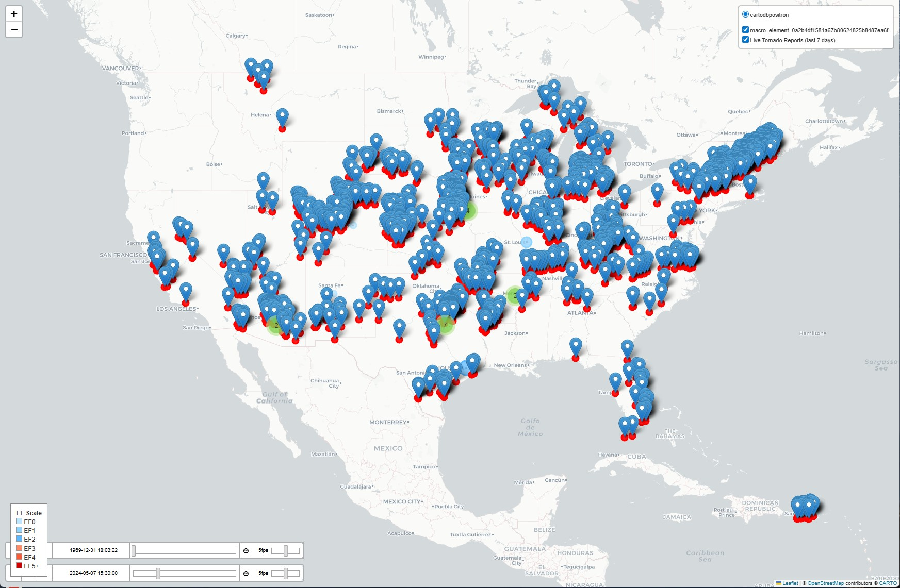

Interactive Map
A fast, client-side interactive map with search/filters and smooth zoom. Built to be easy to host anywhere (no backend). Accessible, keyboard-friendly controls.
A few projects I’m proud of—from ServiceNow platform work to pure dev builds. The interactive map is linked below; the rest include short blurbs and tech stacks.
A fast, client-side interactive map with search/filters and smooth zoom. Built to be easy to host anywhere (no backend). Accessible, keyboard-friendly controls.
Client-side tornado explorer with search/filters and smooth zoom. Easy to host (no backend) and keyboard-friendly.
Personal site built from scratch with a light brand palette, responsive layout, and reusable components. Includes portfolio, bio, CV, and a contact page with a looping typing effect.
Per-site visibility using cmn_location hierarchy, plus validation and reporting.
End-to-end web app from my CS465 course: backend APIs, frontend UI, and data persistence. Focus on clean routes, clear models, and a straightforward UX
3D desk scene with lighting, camera controls, and textured materials (C++/OpenGL).